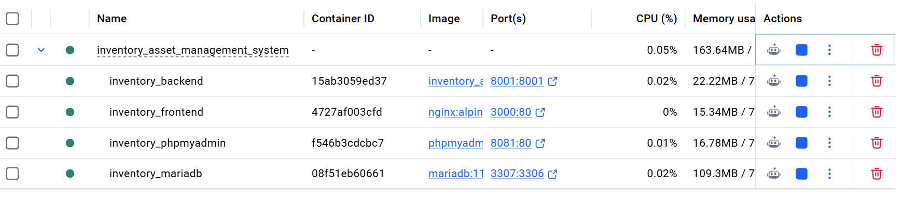
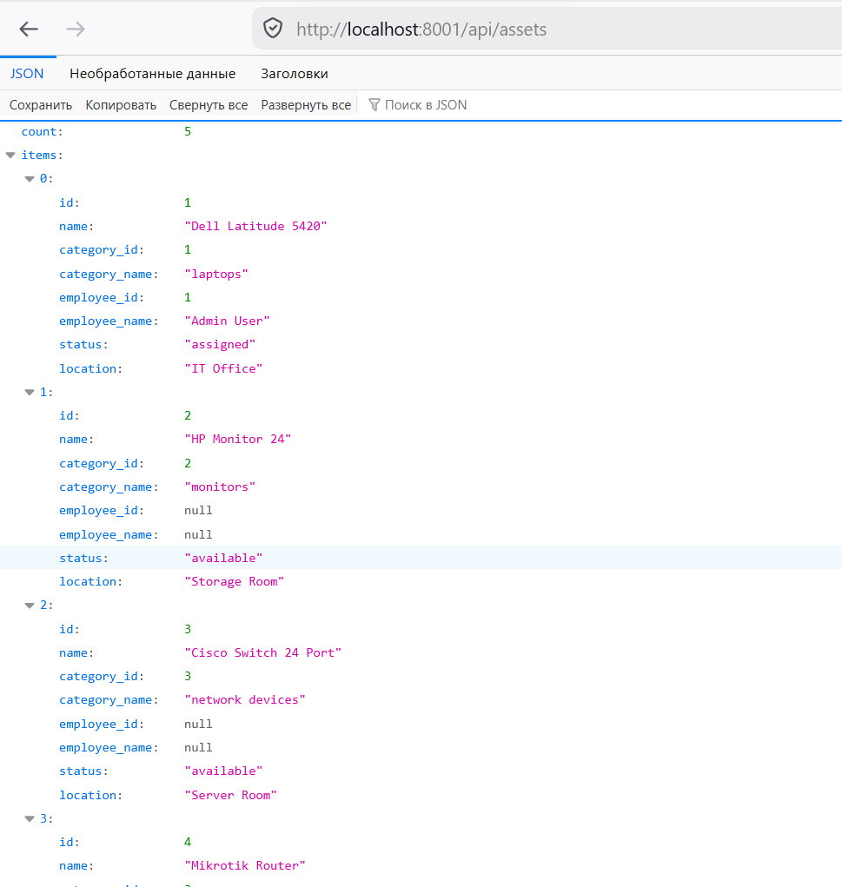
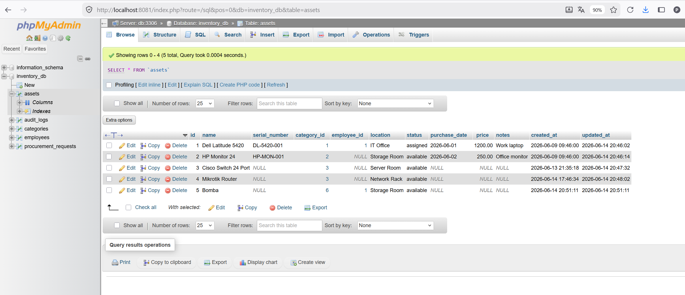
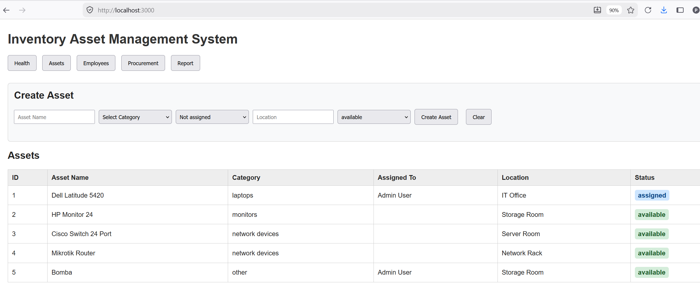

Inventory Asset Management System
Final Course Project
Enterprise-style web application for managing IT assets, employees, procurement requests, and reports.
Python HTTPServer · MariaDB · Docker Compose · Nginx Frontend · GitHub
Project Idea
The project solves a typical IT department task: tracking company equipment from registration to assignment, availability, procurement, and reporting.
Assets
Register and track company equipment.
Register and track company equipment.
Employees
Link assets to responsible employees.
Link assets to responsible employees.
Procurement
Create and track purchase requests.
Create and track purchase requests.
Reports
Show inventory summary and statistics.
Show inventory summary and statistics.
Architecture
Frontend
HTML, CSS, JavaScript served by Nginx.
HTML, CSS, JavaScript served by Nginx.
Backend
Python HTTPServer with JSON API endpoints.
Python HTTPServer with JSON API endpoints.
Database
MariaDB stores assets, employees, categories, procurement requests, and audit logs.
MariaDB stores assets, employees, categories, procurement requests, and audit logs.
DevOps
Docker Compose starts the whole system with one command.
Docker Compose starts the whole system with one command.
Docker Compose Services
inventory_backend 8001:8001 Python backend API inventory_frontend 3000:80 Nginx frontend inventory_mariadb 3307:3306 MariaDB database inventory_phpmyadmin 8081:80 Database web UI
Docker Compose makes the environment reproducible and easy to start on another machine.
Docker Containers Screenshot

Running containers and exposed ports.
Backend API Endpoints
GET http://localhost:8001/api/health GET http://localhost:8001/api/assets GET http://localhost:8001/api/categories GET http://localhost:8001/api/employees GET http://localhost:8001/api/procurement GET http://localhost:8001/api/reports
The frontend uses these API endpoints to load data and update the page.
API Response Screenshot

Example JSON response from the Assets API.
Database
Main database tables:
assets— company equipmentemployees— employees responsible for assetscategories— asset categoriesprocurement_requests— purchase requestsaudit_logs— system activity log concept
Database Screenshot

Assets table in phpMyAdmin.
Frontend Demo

Frontend page with asset data.
Implemented Features
- Docker Compose environment
- Python backend API
- MariaDB database schema
- Frontend forms for assets, employees, and procurement
- Search/filter for assets, employees, and procurement requests
- Report dashboard
- Git checkpoint script and project documentation
Future Improvements
- Add authentication and user roles
- Add edit/archive operations
- Add CSV/PDF export
- Add dashboard charts
- Add automated tests and CI/CD pipeline
- Add backup and restore scripts
Thank You
GitHub repository:
https://github.com/Oboltus01/inventory-asset-management-system
Inventory Asset Management System · Final Project